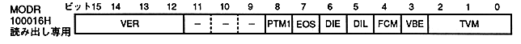

Plot trigger mode upper: PTM1, bit 8
Even / odd coordinate selection bit: EOS, bit 7
Double dense interlace enable bit: DIE, bit 6
Double dense interlace drawing line: DIL, bit 5
Frame buffer switching mode bit: FCM, bit 4
V blank erase write enable bit: VBE, bit 3
TV mode selection bits: TVM, bits 2-0